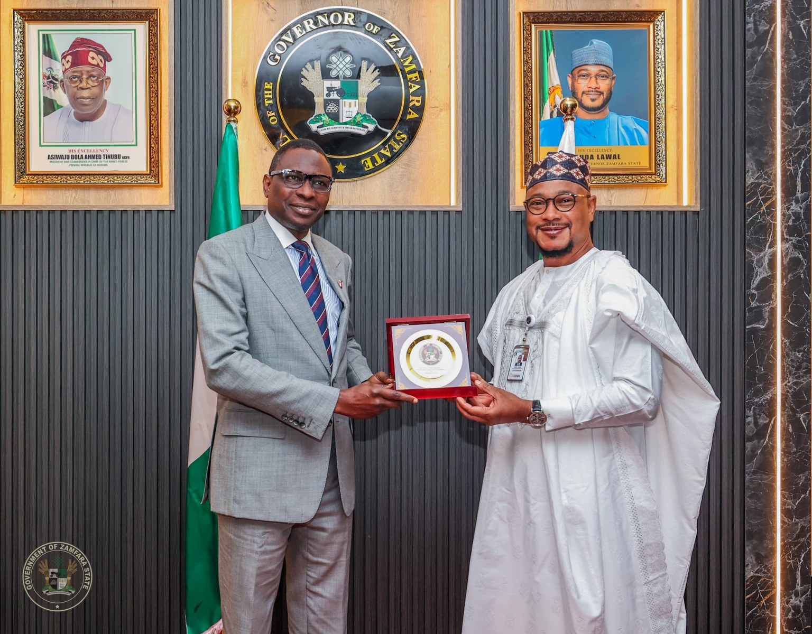

Zamfara is evidence of transformational leadership under Gov Lawal, says EFCC Chairman

EFCC Chairman Olanipekun Olukoyede described developments in Zamfara as evidence of transformational leadership under Governor Dauda Lawal. He delivered the keynote address at an anniversary lecture marking 30 years since the state’s creation, held at the Government House in Gusau.
Olukoyede said he had reviewed the state’s history and the governor’s work before accepting the invitation. He noted that his professional role rarely takes him to political events or government houses, and said he discussed his assessment of Zamfara with the president before travelling. He also said the anniversary marked his first visit to the state.
On arriving in Gusau, Olukoyede said he noticed the new airport, paved roads and solar street lighting. He described the changing appearance of the capital as a sign of wider change in the state. He also cited what he said was steady improvement in Zamfara’s performance in NECO and WAEC examinations, alongside expanding public infrastructure. The lecture’s theme was “accountability and responsibility in transformational government.”
Governor Lawal said the anniversary theme, “Reflections, Achievements, and the Future,” was intended to consider the challenges that have shaped Zamfara and the steps needed to improve its future. He said discussions at the event covered public accountability, community involvement in addressing insecurity, the preservation of history and culture, and connections between security and socio-economic development.
Lawal said the administration’s Six-Point Rescue Agenda addresses the state’s challenges, while the Zamfara State Development Plan 2025–2034 sets out longer-term priorities for the economy, infrastructure, social welfare, human capital, governance and environmental sustainability. Other speakers at the anniversary lecture included Professors Tijjani Muhammad Bande, Sulaiman Kura, Murtala Rufai and Taofik Aminu.
Source: Premium Times